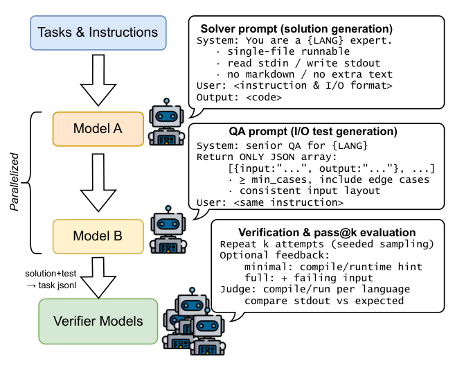

IJCNN 2026LLMs for code
CodeFORGE: Framework for Orchestrated Rare Programming Language Generation and Evaluation
An executable benchmark of 1,196 verified tasks across 12 rare and legacy languages. Separates solution synthesis from test generation and uses a Docker-based verification pipeline with model cascading.